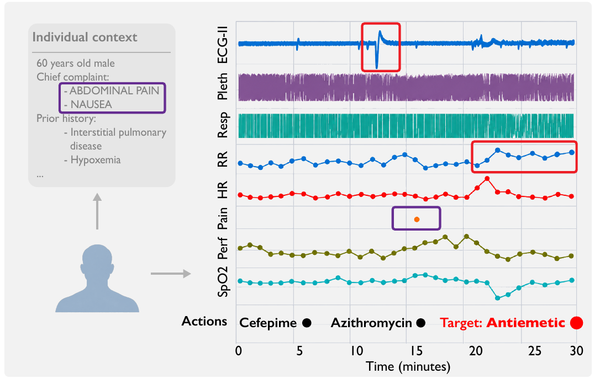

Clinical care
ECG, plethysmography, respiration, blood pressure, SpO₂, and heart rate, with clinical context. Actions span medications, procedures, diagnostic evaluations, and treatment adjustments.
MC-MEDMIMIC-IIIMIMIC-IV · externalSensors matter not only for describing what is happening, but for informing what to do next.
Today’s sensor models recognize states or predict outcomes. The actions that follow are modeled separately, each with its own formulation and a closed label space — so there is no common way to relate sensor evidence, context, and the decisions they support.
Unlike fixed labels, language can express task intent, individual context, physiological state, and action semantics together. That lets very different sensor-action problems be written in one common form.
OpenSLA puts Sensor-Language-Action modeling into practice: a single model for hierarchical action prediction, sensor-state understanding, and action explanation, grounded in the underlying sensor evidence.
“Can sensor data, language, and action be modeled through a unified framework?”
The same model answers all three from one sensor window and the individual’s context.
67-year-old male · complaint: fever · prior history …
Multi-level action prediction
Sensor-state understanding
Action-evidence grounding
Six real-world cohorts, three healthcare settings, and comparisons against supervised models, time-series foundation models, sensor-language models, and multi-modal LLMs.
OpenSLA has the highest balanced accuracy for action necessity in all six cohorts, and for action category in five.
Balanced accuracy (%); 50 is chance. Baseline = strongest of the eight compared methods. Tables 2–4.
Hover a phrase. The part of the recording it comes from lights up.

For heart-rate channel, the dominant finding is elevated heart-rate pattern; HR median 100, range 95–108, n=30. The cardiac waveform channel shows variable ECG waveform periodicity; rate proxy 95.2/min, IQR 0.40.
At the decision time, the observed vital signs show sinus-rate cardiac activity with HR approximately 90 bpm.
Across the recent monitored interval, pulse rate shows elevated heart-rate pattern; HR median 100, range 97–104, n=30. ECG Lead II: irregular Lead II rhythm proxy; rate proxy 95.2/min, IQR 0.40.
MAE of quantities read from the generated captions, OpenSLA-H · Table 5.
Imipenem is absent from the supervised action targets. In OpenSLA’s representation space it sits inside the antibiotics cluster — and with parameters frozen, OpenSLA-H tells it apart from no action at 71.4 balanced accuracy, against 61.9 for the strongest baseline.

Drag α from one real sample to the other. At each stop, the nearest real sample is retrieved and its insulin dose read off.

Nearest real sample: 0.05 U endpoint
With the backbone frozen, ridge readouts recover the next two hours of glucose: mean-glucose error 24.0, against 26.5 for the best competing representation · Table 14.
What the ablations and transfer studies say about where the gains come from.
Training on action labels alone, VLA-style, is the weakest variant on every endpoint. On VitalDB, necessity AUROC rises from 54.1 to 74.9 with caption generation and action conditioning.
Adding action-evidence captions to the other three facets lifts necessity AUROC from 81.6 to 83.4 on MOVER and from 64.3 to 74.9 on VitalDB.
Dropping action conditioning or the fusion decoder still beats action-only training, but the full model is best on all four operating-room endpoints.
Compared with LLaVA-style adapters and Flamingo-style cross-attention, direct LoRA adaptation is best on all four operating-room endpoints. On VitalDB, necessity AUROC is 74.9 with LoRA, 68.9 with cross-attention, and 54.4 with an adapter.
Hierarchical Memory cuts sensor tokens 14.49× in clinical windows and 4.67× in the operating room, for 3.4× and 1.7× faster forward passes. Short CGM sequences see little runtime benefit.
On waveform-linked MIMIC-IV (1,000 windows from 87 individuals), with no further fine-tuning, both OpenSLA variants outperform the adapted sensor-language baselines on necessity and category balanced accuracy — 74.4 versus 69.3 for necessity.


A captioning pipeline for supervision, and a model trained jointly to predict actions and generate captions.

Individual context goes through a text encoder; each sensor channel through a frozen signal encoder, giving a sequence of sensor tokens.
A LoRA-adapted language model reads text and sensor tokens together. Action heads predict necessity, category, and label; a caption decoder, conditioned on the predicted action, writes the explanation.
OpenSLA-H adds learned queries that compress long recordings across resolutions — 14× fewer sensor tokens in clinical windows — while global queries keep the sample-level picture.
VLA-style action-only training, SensorLM-style contrastive alignment, and a supervised model, all on the same data and compute budget.
Hover a phrase to see where in the recording — or in the individual’s context — it comes from.

The lead II ECG showed an irregular-periodicity proxy, with an estimated rate of 100.2 beats/min. Respiratory rate was elevated, with a median of 26 breaths/min and a range of 23–30 across 31 measurements.
Numerical respiratory-rate measurements and the respiration waveform both indicated rapid breathing.
Overall findings suggested a pain and nausea symptom burden, supported by the presenting complaints, elevated heart rate, and a pain score of 5.
Findings that bear on pain or nausea management are high pain reported nausea provides symptom evidence to the antiemetic.
Sensor histories paired with individual context, structured actions, and evidence captions.
ECG, plethysmography, respiration, blood pressure, SpO₂, and heart rate, with clinical context. Actions span medications, procedures, diagnostic evaluations, and treatment adjustments.
MC-MEDMIMIC-IIIMIMIC-IV · externalDense perioperative waveforms and numerical measurements, aligned with the actions taken during surgery.
MOVERVitalDBContinuous glucose and basal-insulin histories from daily life. The action is insulin bolus delivery.
MetaboNetPEDAPLanguage in sensor intelligence is not only for describing observations. It can organize the knowledge that connects states to actions.
@misc{xu2026opensla,
title = {Sensor-Language-Action Models},
author = {Xu, Yuekai and Shuai, Zitao and Yang, Yuzhe},
year = {2026},
url = {https://tennis-rabbit.github.io/OpenSLA}
}